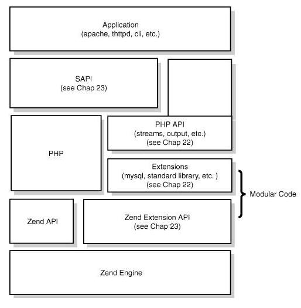

SAPI: Server abstraction API
PHP与其他应用的编程接口

脚本以SAPI接口实现开始执行。不同的SAPI接口实现会完成他们特定的工作， 例如Apache的mod_php SAPI实现需要初始化从Apache获取的一些信息，在输出内容是将内容返回给Apache
/main/SAPI.c和SAPI.h文件所包含的一些函数就是模板方法模式中的抽象模板
/SAPI 目录下提供各个服务器对于特定接口的定义及相关实现
PHP以mod_php5模块的形式与Apache集成。
一般情况下，它的一个请求的生命周期也会和其它的SAPI一样：模块初始化=>请求初始化=>处理请求=>关闭请求=>关闭模块
CGI(Common Gateway Interface):公共网关接口, HTTP服务器与你的或其它机器上的程序进行“交谈”的一种工具，其程序一般运行在网络服务器上.
FastCGI像是一个常驻(long-live)型的CGI，它可以一直执行着，只要激活后，不会每次都要花费时间去fork一次(这是CGI最为人诟病的fork-and-execute 模式)。
工作流程
PHPFastCGI管理器，是只用于PHP的。